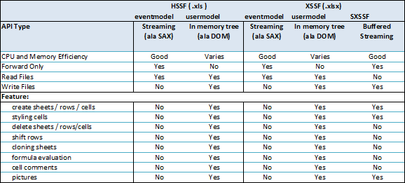
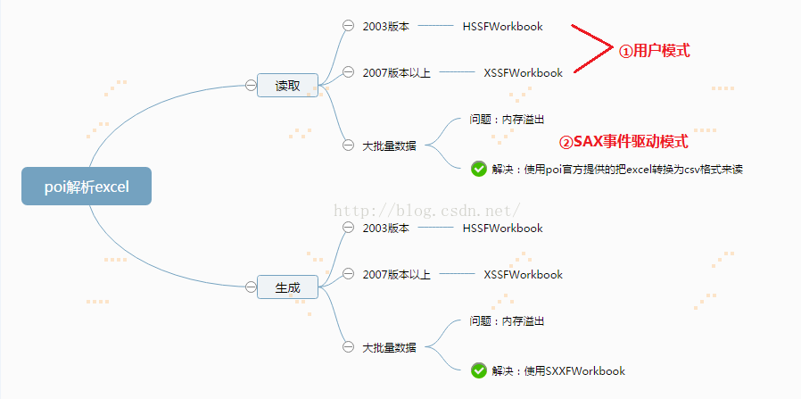

最近公司有小伙伴使用 POI 处理 Excel 文件时没注意细节问题，导致性能较差甚至出现 OOM，所以趁此机会也总结下自己此前处理大数据量 Excel 文件的经验体会。
HSSF、XSSF、SXSSF 的区别
看懂了下面这个图，从此不再犯迷糊。

实测使用 XSSF 写一个一万多行 12 列的 Excel 文件内存占用量已经超过 1 GB，而使用 SXSSF 内存占用量之控制在 3.3 MB，而且使用速度提升 3 倍多。所以 POI 大数据量写操作推荐使用 SXSSF。
XML 标准
xlsx 文件其实是基于 OOXML(Office Open XML ) 标准，XX.xlsx 文件其实是个压缩文件，可修改后缀打开压缩包查看内部文件的。
注意：<a href=”https://statusnotquo.com/2015/08/25/string-vs-inline-string-vs-shared-string-in-open-xml/ “string、inlinestring、sharedstring 区别 ，因为使用 SXSSF 写文件时默认采用的是 inlinestring 格式，而读文件时若使用 cell.setCellType(Cell.CELL_TYPE_STRING) 方法，会将单元格设置为 string 格式，这样会导致原本有字符串数据（inlinestring）的单元格读出的内容为空。
SAX 解析
若使用 POI 的用户模式读取大数据量 Excel 文件，很容易导致内存溢出，实测使用 XSSF 读取一个 12000 行 13 列的 Excel 文件，占用内存高达 1+ GB。由于我们已经知道了 xlsx 文件实际上是个 xml 文件，所以我们可以采用 SAX 方式来解析读取 Excel 文件，实测切换到 SAX 方式后，内存占用只有几兆，耗时也缩短一半。所以 POI 大数据量读操作推荐使用 SAX 解析的方式，当然，使用事件驱动模式编码实现要更复杂一些。

测试代码
1 | /** |
关于 SAX 的例子网上很多，这里截取我测试时编写的一段。工作中一般不是继承 DefaultHandler 类，而是 POI 官网实例中的实现 SheetContentsHandler 接口。
- 获取一个 XMLReader 对象：
XMLReader parser= SAXHelper.newXMLReader();或XMLReader parser = XMLReaderFactory.createXMLReader("org.apache.xerces.parsers.SAXParser"); paser.setContentHandler(new SheetHandler(sharedStringTable))
1 | /** |